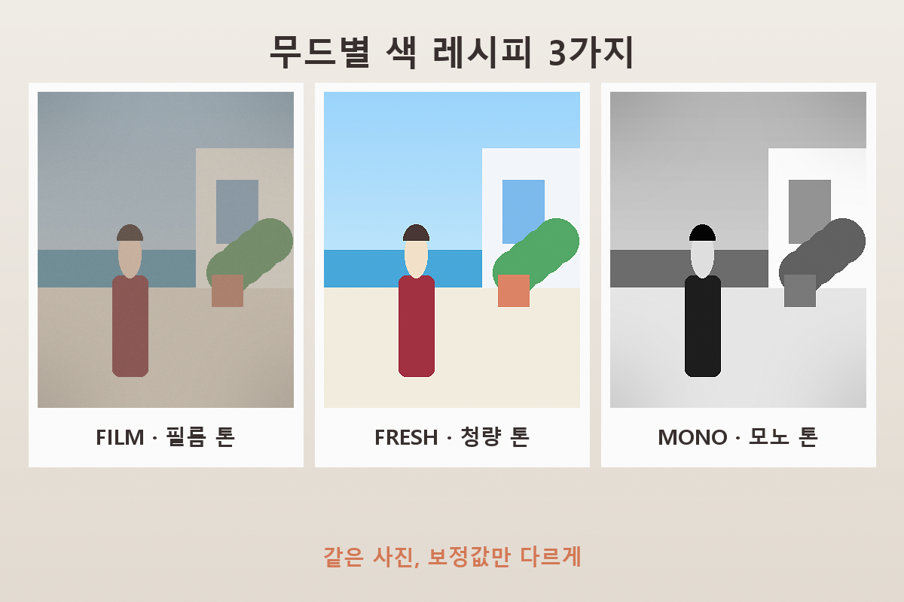
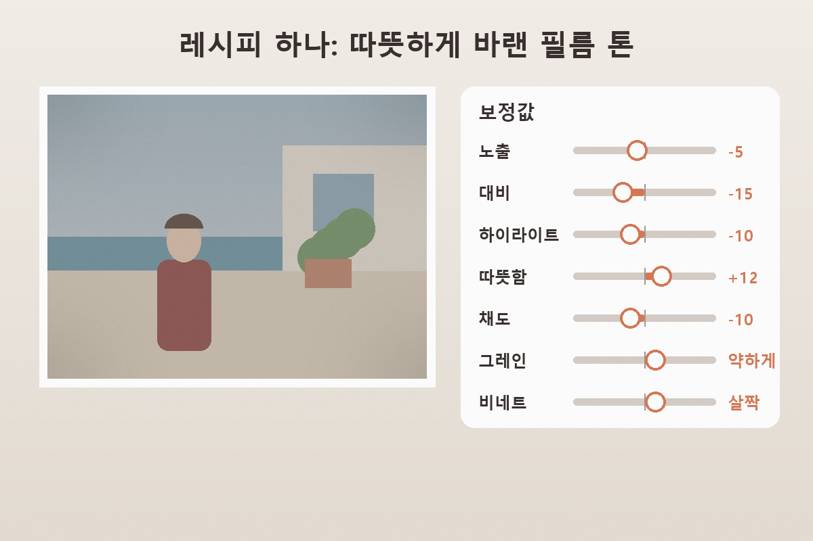
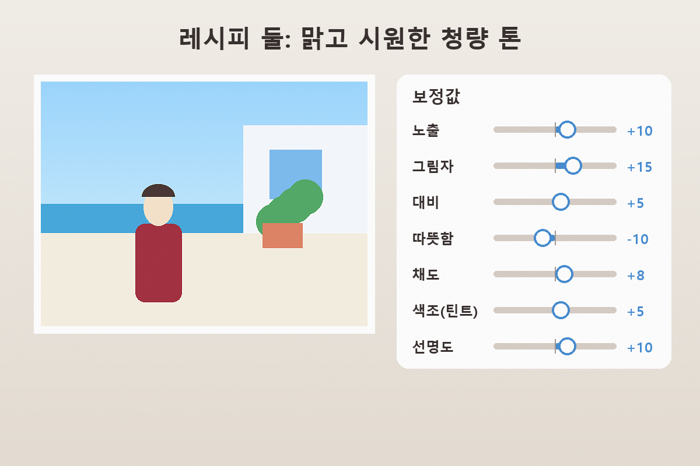
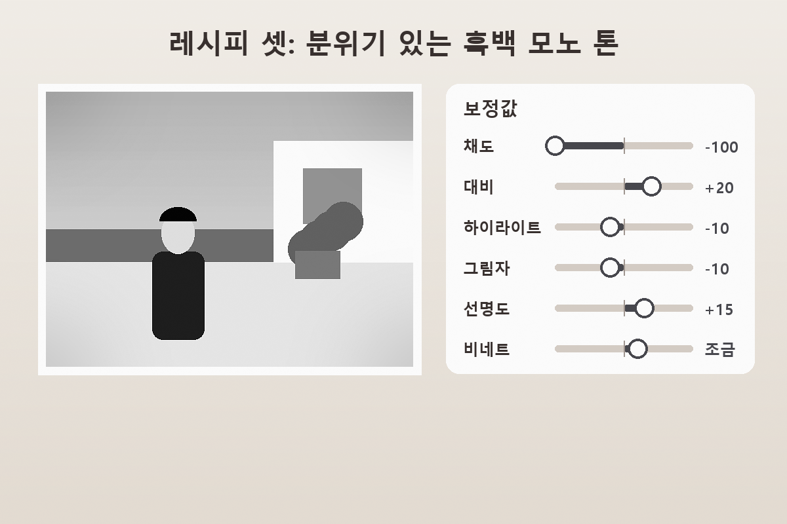
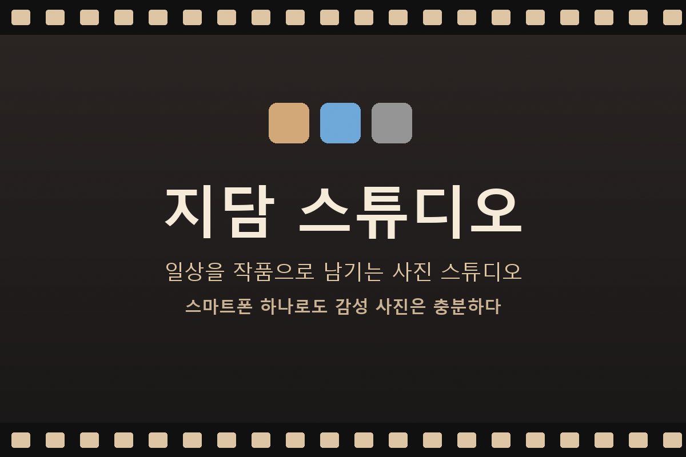

사진 색감 보정 레시피, 스마트폰으로 따라 하는 무드별 필터 3가지

지난 보정 노하우 글에서는 자르기, 밝기, 색 순서로 보정하는 기본 3단계를 알아봤어요. 그 글 마지막에 따뜻한 카페, 청량한 바다, 차분한 야경 레시피를 짧게 소개했는데, 더 다양한 분위기를 알고 싶다는 분들이 많았어요. 요즘 SNS를 보면 피드 전체가 하나의 색감으로 통일된 계정이 눈에 띄죠. 그런 피드는 대부분 복잡한 앱이 아니라, 자기만의 '색 레시피' 몇 개를 정해 두고 꾸준히 같은 값을 적용한 결과예요. 이번 글에서는 스마트폰 기본 편집 기능만으로 만들 수 있는 무드별 색 레시피 세 가지를 준비했어요. 따뜻하게 바랜 필름 톤, 맑고 시원한 청량 톤, 그리고 분위기 있는 흑백 모노 톤까지, 값을 그대로 따라 해 보세요.
1. 레시피 하나: 따뜻하게 바랜 필름 톤

필름 톤은 오래된 사진처럼 살짝 바래고 따뜻한 느낌이 특징이에요. 일상 스냅이나 골목, 카페 사진에 특히 잘 어울려요. 보정값은 이렇게 맞춰 보세요. 노출은 -5로 살짝 낮추고, 대비는 -15로 줄여 어두운 부분이 조금 떠 보이게 만들어요. 이 '떠 보이는 검정'이 필름 느낌의 핵심이에요. 그다음 하이라이트를 -10으로 내려 밝은 부분이 하얗게 날아가지 않게 하고, 따뜻함은 +12 정도로 올려 노란빛을 더해 주세요. 채도는 -10으로 낮춰 색을 차분하게 가라앉히고, 그레인이나 노이즈 기능이 있다면 아주 약하게 더해 입자감을 살려요. 마지막으로 비네트를 살짝 넣어 가장자리를 어둡게 하면 시선이 가운데로 모이면서 옛날 카메라로 찍은 듯한 분위기가 완성돼요.
2. 레시피 둘: 맑고 시원한 청량 톤

청량 톤은 여름 바다나 맑은 하늘, 흰 벽과 초록 식물이 있는 사진에 잘 어울리는 깨끗하고 시원한 색감이에요. 필름 톤과는 반대로 밝고 선명하게 가는 게 포인트예요. 먼저 노출을 +10으로 올려 화사하게 만들고, 그림자를 +15로 올려 어두운 곳까지 밝혀 주세요. 대비는 +5 정도로 살짝만 올려 또렷함을 더해요. 색은 따뜻함을 -10으로 내려 푸른 기운을 더하고, 채도는 +8 정도로 조금 올려 하늘과 바다 색을 살려요. 이때 피부가 함께 나오는 사진이라면 피부가 창백하거나 푸르게 보일 수 있으니, 색조(틴트)를 마젠타 쪽으로 +5 정도 옮겨 혈색을 보완해 주세요. 마지막으로 선명도를 +10 올리면 물결이나 잎사귀의 결이 살아나 상쾌한 느낌이 한층 더해져요.
3. 레시피 셋: 분위기 있는 흑백 모노 톤

흑백 사진은 색이 빠지는 대신 빛과 그림자, 형태와 표정이 훨씬 또렷하게 보여요. 그래서 비 오는 거리, 창가 인물, 그림자가 긴 오후 장면처럼 분위기가 중요한 사진에 잘 어울려요. 흑백 필터를 바로 씌우기보다 직접 만들어 보세요. 채도를 -100으로 내려 색을 모두 빼고, 대비를 +20으로 올려 밝고 어두운 차이를 분명하게 해요. 하이라이트는 -10, 그림자는 -10으로 양쪽을 살짝 눌러 주면 깊이 있는 회색 톤이 만들어져요. 선명도를 +15 정도 올리면 질감이 살아나고, 비네트를 조금 넣으면 집중도가 높아져요. 흑백은 원본 사진에 빛과 그림자의 대비가 분명할수록 멋있게 나오니, 처음부터 창가 빛이나 낮은 햇살처럼 방향이 있는 빛에서 찍은 사진으로 연습해 보세요.

오늘 소개한 세 가지 색 레시피를 정리해 볼게요. 필름 톤은 대비와 채도를 낮추고 따뜻함을 더해 바랜 느낌으로, 청량 톤은 밝기와 그림자를 올리고 색온도를 낮춰 맑고 시원하게, 모노 톤은 채도를 빼고 대비와 선명도로 빛과 그림자를 살리기. 마음에 드는 레시피가 생겼다면 메모장에 값을 적어 두고 같은 분위기의 사진에 반복해서 적용해 보세요. 피드 전체에 나만의 색이 생겨요. 비싼 유료 필터가 없어도 괜찮아요. 스마트폰 하나로도 감성 사진은 충분하다는 것, 보정에서도 그대로 통한답니다. 지담 스튜디오도 촬영 분위기에 따라 이 세 가지 레시피를 기본으로 조금씩 바꿔 쓰고 있어요. 여러분이 가장 좋아하는 색감은 어떤 톤인가요? 댓글로 알려 주시면 다음 레시피에 참고할게요. 이웃추가도 잊지 마세요!